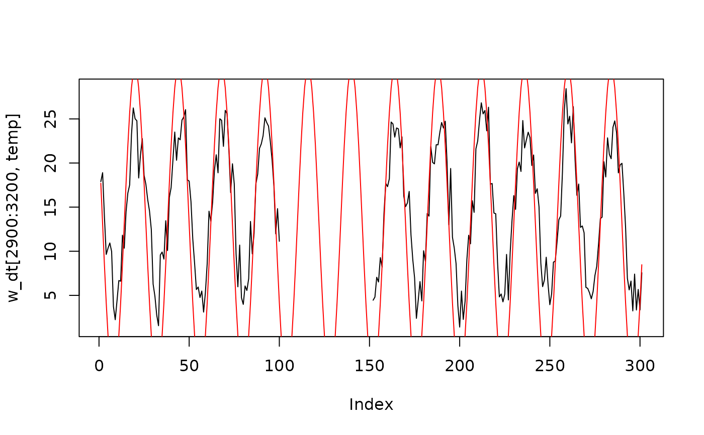

Impute hourly diurnal weather fluctuations.
impute_diurnal.RdImpute hourly diurnal weather fluctuations.
Usage
impute_diurnal(
h = 1:24,
max_obs = 95,
min_obs = 45,
max_hour = 4,
min_hour = 15,
l_out = 24,
ind_out = "all"
)Arguments
- h
numeric or POSIX, vector. numeric vectors indicate which hour to return. A POSIX formatted vector can also be used and the imputed relative humidity for the hour returned.
- max_obs
numeric, maximum daily observation of relative humidity or temperature
- min_obs
numeric, minimum daily observation of relative humidity or temperature
- max_hour
integer, hour in the day when maximum observation was made.
- min_hour
integer, hour in the day when minimum observation was made.
- l_out
integer, length out of function.
24for hourly observations (default.1440for minute.48for half hourly Still Experimental!- ind_out
integer, select the output using an index number similar it
1:10[ind_out]
Details
Impute hourly fluctuations in temperature or relative humidity from daily maximums and minimums. This function uses a sin function to estimate the diurnal fluctuations of temperature or humidity.
Examples
impute_diurnal()
#> [1] 88.71273 92.13637 94.27353 95.00000 93.98733 91.03135 86.37153 80.38540
#> [9] 73.55790 66.44216 59.61465 53.62851 48.96868 46.01269 45.00000 45.72644
#> [17] 47.86358 51.28720 55.79834 61.13483 66.98653 73.01336 78.86507 84.20157
impute_diurnal(Sys.time())
#> [1] 93.98733
impute_diurnal(max_obs = 22,
min_obs = 18)
#> [1] 21.49702 21.77091 21.94188 22.00000 21.91899 21.68251 21.30972 20.83083
#> [9] 20.28463 19.71537 19.16917 18.69028 18.31749 18.08101 18.00000 18.05812
#> [17] 18.22909 18.50298 18.86387 19.29079 19.75892 20.24107 20.70921 21.13613
impute_diurnal(max_hour = 3,
min_hour = 9)
#> [1] 93.49229 94.62018 95.00000 91.65064 82.50002 70.00003 57.50003 48.34938
#> [9] 45.00000 45.37980 46.50767 48.34934 50.84886 53.93027 57.49996 61.44945
#> [17] 65.65874 69.99994 74.34115 78.55045 82.49995 86.06964 89.15107 91.65060
impute_diurnal(max_obs = 99,
min_obs = 45)
#> [1] 92.20974 95.90728 98.21541 99.00000 97.90632 94.71386 89.68126 83.21623
#> [9] 75.84253 68.15753 60.78383 54.31879 49.28618 46.09370 45.00000 45.78456
#> [17] 48.09266 51.79017 56.66221 62.42561 68.74545 75.25443 81.57427 87.33769
impute_diurnal(max_hour = 6,
min_hour = 14)
#> [1] 83.88920 87.67762 90.78670 93.09696 94.51962 95.00000 93.09700 87.67768
#> [9] 79.56711 70.00003 60.43294 52.32236 46.90303 45.00000 45.48036 46.90299
#> [17] 49.21323 52.32230 56.11070 60.43287 65.12269 69.99994 74.87720 79.56703
w_dt <- weather
w_dt[3000 : 3050, temp := NA_real_]
#> Index: <station>
#> times temp rh rain ws wd wd_sd lon
#> <POSc> <num> <num> <num> <num> <num> <num> <num>
#> 1: 2020-04-13 01:00:00 11.710215 NaN 0.2 1.9 303 0.000000e+00 135.86
#> 2: 2020-04-13 02:00:00 8.591594 NaN 0.0 1.0 38 0.000000e+00 135.86
#> 3: 2020-04-13 03:00:00 5.029886 NaN 0.0 3.5 15 0.000000e+00 135.86
#> 4: 2020-04-13 04:00:00 7.329537 NaN 0.0 0.4 194 8.537737e-07 135.86
#> 5: 2020-04-13 05:00:00 4.867557 NaN 0.4 1.9 276 0.000000e+00 135.86
#> ---
#> 8782: 2020-10-12 21:00:00 14.505099 NaN 0.0 1.6 189 0.000000e+00 135.73
#> 8783: 2020-10-12 22:00:00 16.143942 NaN 0.0 1.2 163 0.000000e+00 135.73
#> 8784: 2020-10-12 23:00:00 10.410922 NaN 0.0 3.4 137 0.000000e+00 135.73
#> 8785: 2020-10-13 00:00:00 7.722190 NaN 0.0 3.3 117 0.000000e+00 135.73
#> 8786: 2020-10-13 01:00:00 5.800267 NaN 0.0 3.6 112 0.000000e+00 135.73
#> lat station YYYY MM DD hh mm
#> <num> <char> <num> <num> <int> <int> <num>
#> 1: -33.26 naddacs 2020 4 13 1 0
#> 2: -33.26 naddacs 2020 4 13 2 0
#> 3: -33.26 naddacs 2020 4 13 3 0
#> 4: -33.26 naddacs 2020 4 13 4 0
#> 5: -33.26 naddacs 2020 4 13 5 0
#> ---
#> 8782: -33.13 scaddan 2020 10 12 21 0
#> 8783: -33.13 scaddan 2020 10 12 22 0
#> 8784: -33.13 scaddan 2020 10 12 23 0
#> 8785: -33.13 scaddan 2020 10 13 0 0
#> 8786: -33.13 scaddan 2020 10 13 1 0
plot(w_dt[2900:3200, temp], type = "l")
rolling_window <- 24
w_dt[, tm_imp := round(data.table::frollapply(
data.table::hour(times),
n = rolling_window,
fill = NA_real_,
FUN = impute_diurnal,
max_obs = max(temp, na.rm = TRUE),
min_obs = min(temp, na.rm = TRUE),
max_hour = data.table::hour(times[which(temp == max(temp, na.rm = TRUE))]),
min_hour = data.table::hour(times[which(temp == min(temp, na.rm = TRUE))]),
align = "center",
ind_out = ceiling(rolling_window/2)),3)]
#> Index: <station>
#> times temp rh rain ws wd wd_sd lon
#> <POSc> <num> <num> <num> <num> <num> <num> <num>
#> 1: 2020-04-13 01:00:00 11.710215 NaN 0.2 1.9 303 0.000000e+00 135.86
#> 2: 2020-04-13 02:00:00 8.591594 NaN 0.0 1.0 38 0.000000e+00 135.86
#> 3: 2020-04-13 03:00:00 5.029886 NaN 0.0 3.5 15 0.000000e+00 135.86
#> 4: 2020-04-13 04:00:00 7.329537 NaN 0.0 0.4 194 8.537737e-07 135.86
#> 5: 2020-04-13 05:00:00 4.867557 NaN 0.4 1.9 276 0.000000e+00 135.86
#> ---
#> 8782: 2020-10-12 21:00:00 14.505099 NaN 0.0 1.6 189 0.000000e+00 135.73
#> 8783: 2020-10-12 22:00:00 16.143942 NaN 0.0 1.2 163 0.000000e+00 135.73
#> 8784: 2020-10-12 23:00:00 10.410922 NaN 0.0 3.4 137 0.000000e+00 135.73
#> 8785: 2020-10-13 00:00:00 7.722190 NaN 0.0 3.3 117 0.000000e+00 135.73
#> 8786: 2020-10-13 01:00:00 5.800267 NaN 0.0 3.6 112 0.000000e+00 135.73
#> lat station YYYY MM DD hh mm tm_imp
#> <num> <char> <num> <num> <int> <int> <num> <num>
#> 1: -33.26 naddacs 2020 4 13 1 0 NA
#> 2: -33.26 naddacs 2020 4 13 2 0 NA
#> 3: -33.26 naddacs 2020 4 13 3 0 NA
#> 4: -33.26 naddacs 2020 4 13 4 0 NA
#> 5: -33.26 naddacs 2020 4 13 5 0 NA
#> ---
#> 8782: -33.13 scaddan 2020 10 12 21 0 NA
#> 8783: -33.13 scaddan 2020 10 12 22 0 NA
#> 8784: -33.13 scaddan 2020 10 12 23 0 NA
#> 8785: -33.13 scaddan 2020 10 13 0 0 NA
#> 8786: -33.13 scaddan 2020 10 13 1 0 NA
plot(w_dt[2900:3200, temp], type = "l")
lines(w_dt[2900:3200, tm_imp], type = "l", col = "red")
